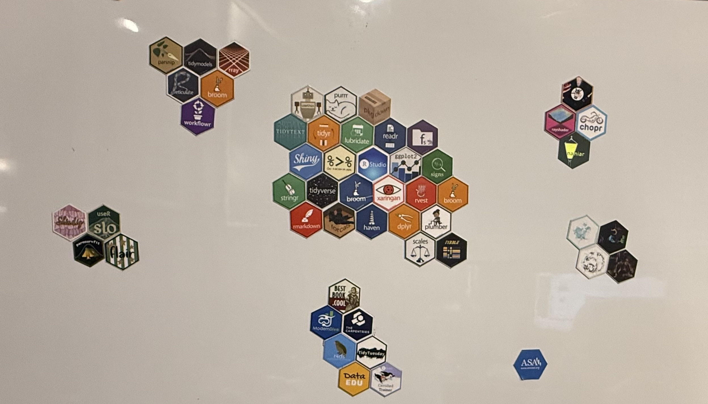
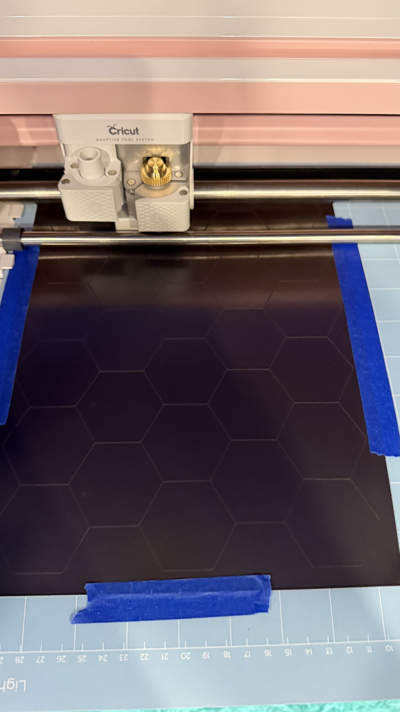
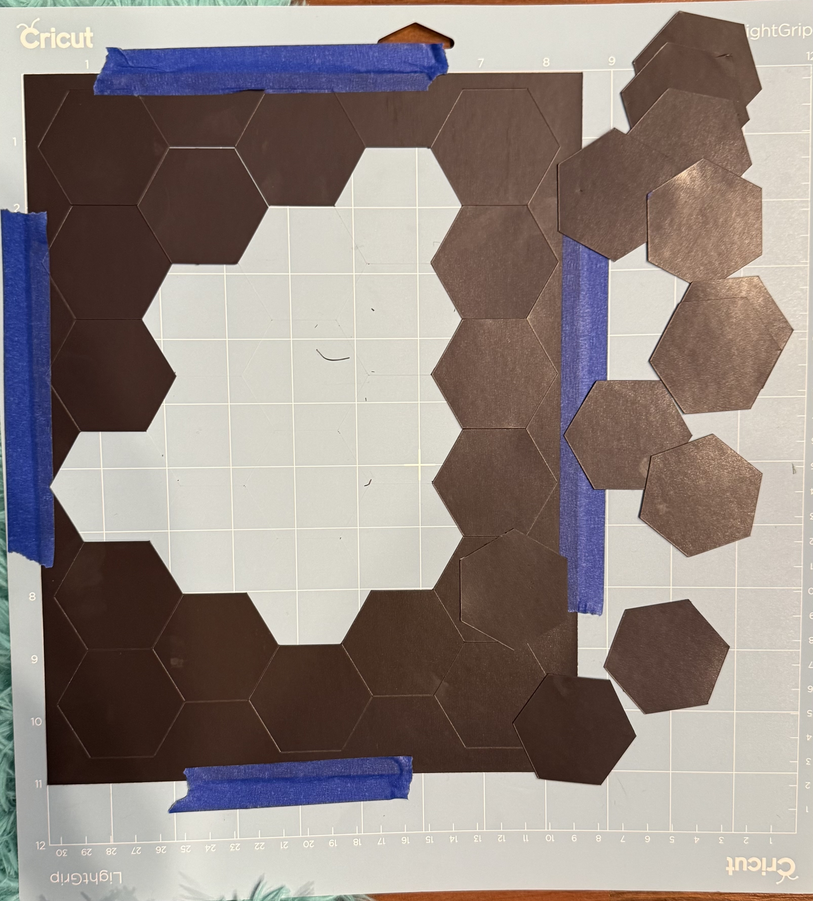
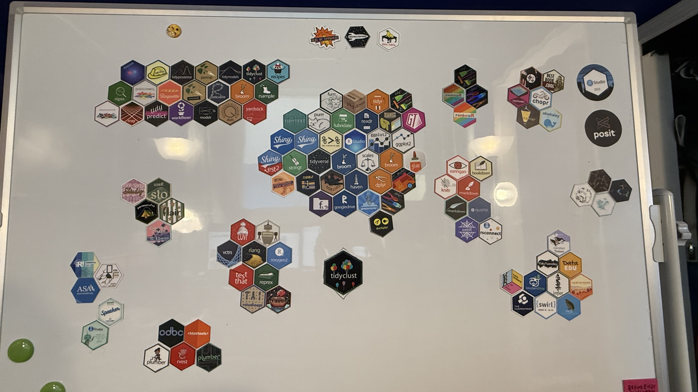
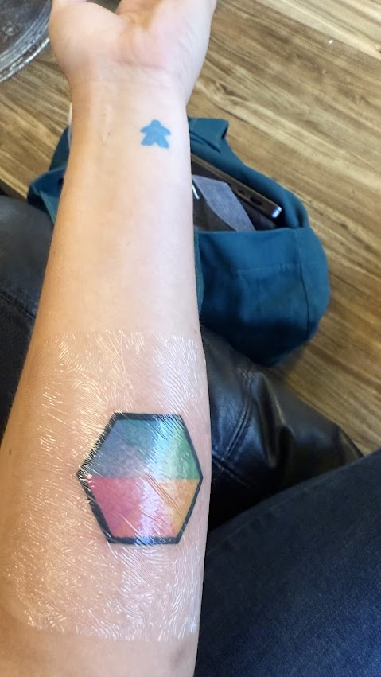

Today’s topic is not particularly technical, my apologies to any Serious Business RSS followers.
But it is undeniably R related!
I want to take 10 minutes to share how I turned my hex sticker collection into whiteboard magnets, in case you too want to get crafty with your stickies.
Part One: A Quarantine Distraction
Our story begins in the year 2020. Three things happen around the same time:
The world went on lockdown, and I am bored.
I upgrade my laptop and experience the complete and utter agony of realizing my hex stickers are stuck to the old one. (I still have said laptop, if only to preserve my vintage R Chicken Ladies sticker…)
I get a big rolling whiteboard, for brainstorming and to serve as the background of my Zooms during remote teaching.
Then the brainwave - if these stickers were magnets, I could keep them forever on my whiteboard, and also have a sweet hex sticker wall style background.
Fortunately, with the infinite downtime of quarantine, I found a few hours to spend carefully cutting hexagons out of adhesive magnetic sheets. (Seriously, this took multiple hours and my hands were unbelievably sore from the scissors after!)
The result:

Part Two: A first attempt
Fast forward to 2025, and now own a Cricut Explore Air 2, mainly for the purpose of cutting vinyl to make my Roller Derby jerseys.
I also have an ungodly pile of hex stickers collected over the years, burning a hole in my desk drawer, that I have not found the time or motivation to magnetify. But wait! I own a cutting machine!
After some research, the internet tells me that Explore Air line can cut magnets with a deep cut blade.
Reader, I bought the blade. It did not succeed.
I tried so many settings - starting with the “0.6mm magnet sheet” preset in the Cricut Design Space, then eventually moving up to maximum possible pressure, six passes. It still couldn’t quite make it all the way through the material.
Part Three: Success!
So, obviously I had to go buy a Cricut Maker. I didn’t need top-of-the-line, so I got it cheap on Facebook Marketplace, so I basically saved money right?
Anyways, I also had to get a special Knife Blade, per the interwebs.
And…. this worked!
  
Here is the current state of the whiteboard, which is about half (!) the stickers from my pile:

P.S. My hex sticker wishlist for this summer’s conferences is: more holographics, dbplyr, dtplyr, ellmer, httr2, tune, workflows, and my white whale: evil cupcake version of recipes!
And if you want something more permanent than even magnets?
Well, you can always just do what I did and put the hex directly on your body…

Appendix: Crafting Nerd Info:
{kind=link}
FAQ
Could you not just use the Deep Cut blade on the Maker, which does higher pressure than the Explore Air 2?
Tried that before buying the Knife Blade. It did not get through the material.
Why didn’t you just use the 3mm sheets instead before buying a new machine?
I already had made the original first set with 6mm sheets and it would drive me crazy to have them be different thicknesses.
Also, I will use the machine for other crafty things too.
What kind of magnet sheets do you recommend?
I don’t think it matters, I just snagged some at Michael’s.
I opted for the adhesive kind, so that if I want to re-use the stickers for something else for some reason, I can still take them off. But of course, you could use the non-adhesive kind and just stick your stickers to it.
Why didn’t you get a Maker 3 or 4?
No need. The only thing those buy you is faster cutting; they don’t have better abilities, and I don’t care that much about speed.
What about [other cutting machine]?
I’m an amateur and had only heard of Cricut so I bought one used on Facebook, I didn’t really research other options. I’m sure some would work.
(Don’t use a laser cutter though - the fumes from laser cutting magnet are hazardous!)
Will you cut some for me?
Sorry but no, I’m not interested in the Etsy life. Plus the magnet material wears out my knife blade super fast.